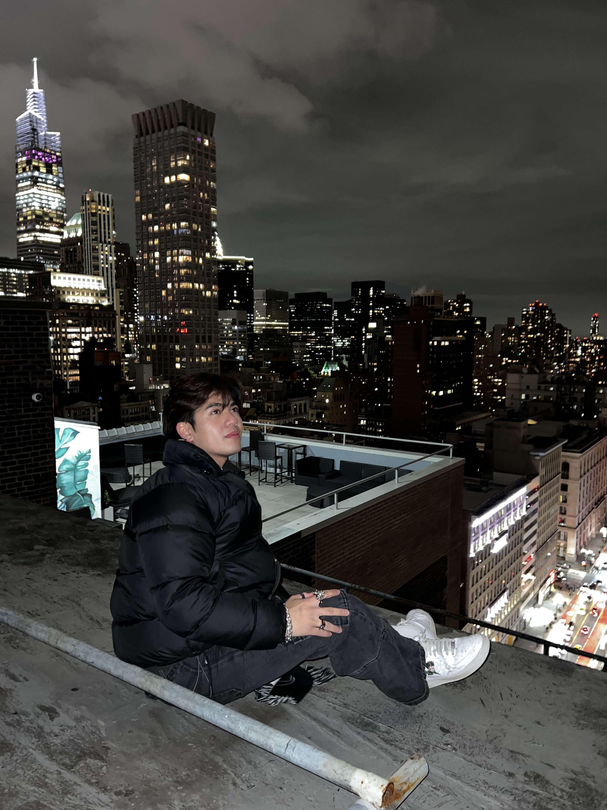
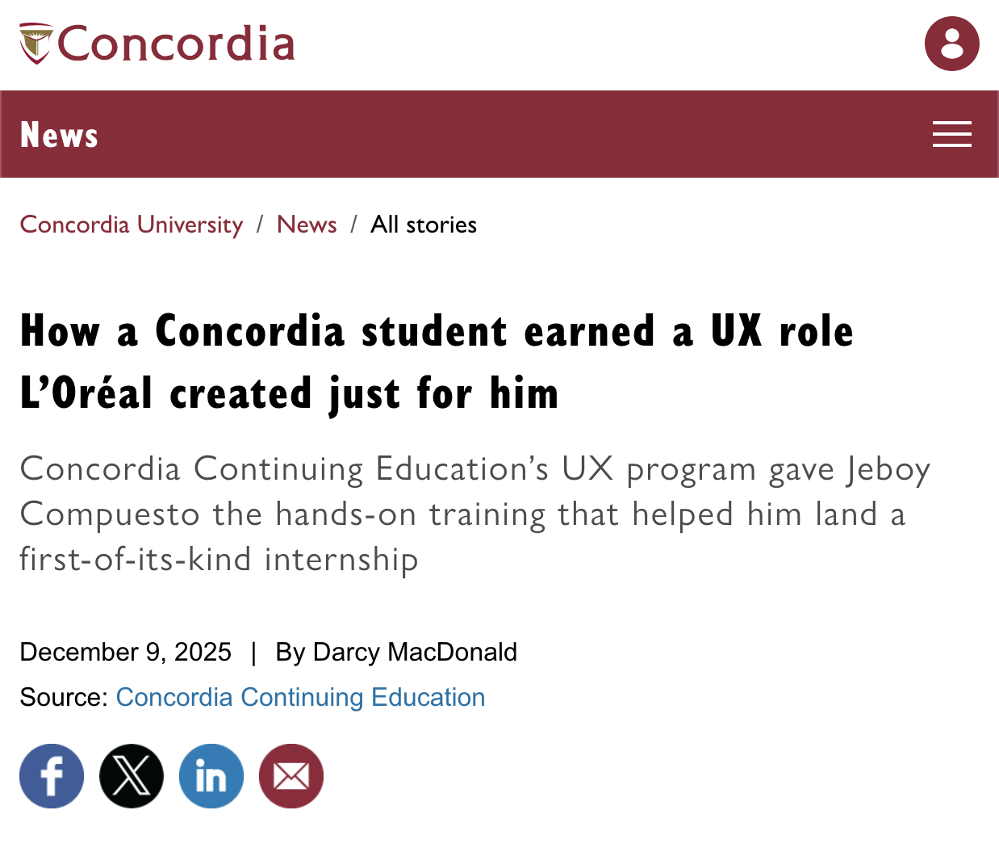

About — Who I am
I'm a versatile UI/UX designer and co-founder of Core Vizuals, a creative agency specializing in immersive, story-driven media. My work spans interactive media, design systems, e-commerce optimization, and digital strategy. I combine UX research, prototyping, data analytics, and front-end development to create digital experiences that are both intuitive and impactful, helping brands and organizations connect with their audiences.

Approach
I integrate research, design, and technical execution into every project. Motion, accessibility, and usability are core pillars of my work, ensuring clarity, engagement, and measurable impact.
Experience
I’ve worked across tech, fashion, beauty, and entertainment industries — from startups to global brands like L’Oréal Canada and Evenko. My expertise includes UX optimization, digital integrations, and leading creative campaigns with measurable results.
Timeline
Led high-production campaigns at Core Vizuals; UX optimization, navigation restructuring, search experience redesign, and e-commerce data analytics at L’Oréal.
Managed digital integrations for venues and festivals, built wireframes and prototypes, and optimized platforms for audience engagement.
Took a break from NYU to pursue a tech-art path, earning UI/UX certificates at Concordia. This specialization shaped my niche and prepared me for future internships in UX and digital product design.
Accepted to both UBC and NYU, ultimately choosing NYU to study digital media while joining family in the U.S. This sparked my passion for storytelling and interactive design.
Education & Accolades
BSc Digital Communication & Media
BA Computation Arts & Computer Science
Interaction Design Foundation
Featured In

Concordia University — Feature Article
A highlight on my creative journey, leadership at Core Vizuals, and the work I've done for big brands and major events across Montréal.
Read Full Article